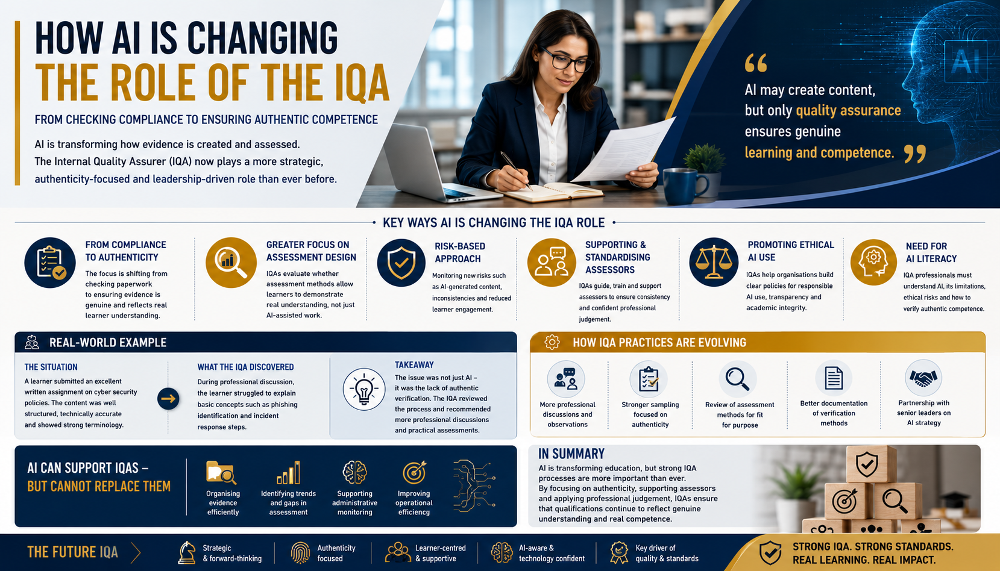

AI is transforming how evidence is created, reviewed, and assessed. Modern IQAs are becoming more strategic, authenticity-focused, and leadership-driven than ever before.

Artificial Intelligence is rapidly transforming education, assessment, and quality assurance across schools, colleges, universities, and vocational training environments. Tools such as ChatGPT, Microsoft Copilot, and Gemini are increasingly being used by learners to generate written content, improve assignments, conduct research, and support learning activities.
As a result, the role of the Internal Quality Assurer is also beginning to change significantly.
Traditionally, IQAs focused heavily on sampling assessment decisions, checking compliance, monitoring assessor consistency, reviewing documentation, and ensuring standards were maintained across qualifications.
While these responsibilities remain essential, AI-assisted education environments are creating new challenges that require IQAs to adopt broader, more strategic, and authenticity-focused roles.
One of the biggest changes affecting IQAs is the growing difficulty in verifying authentic learner evidence.
For many years, strong written work was often considered reliable evidence of learner understanding. However, generative AI has changed this environment dramatically. Learners can now produce highly polished assignments within seconds using AI support tools, even when their practical understanding may be limited.
This creates significant challenges for quality assurance processes.
For example, an assessor may submit sampled learner work that appears technically excellent on paper. The assignment may include professional terminology, clear structure, and well-developed explanations. However, during professional discussion or observation, the learner may struggle to explain:
In this situation, the issue is not necessarily whether AI was used. The real concern is whether the assessment process successfully verified genuine understanding and competence.
Modern IQAs increasingly review whether assessment methods themselves remain fit for purpose within AI-assisted learning environments.
Another major change involves assessor support and standardisation.
Many assessors are still developing confidence regarding how AI tools operate and how they should be managed within assessment environments. Some assessors may become overly suspicious of learner work, while others may underestimate the impact AI can have on assessment authenticity.
This creates inconsistency across teams and qualification areas.
Modern IQAs therefore play an increasingly important role in:
Without proper standardisation, learners may receive conflicting expectations depending on which assessor they are assigned.
Historically, IQA sampling strategies often focused mainly on assessor performance and compliance requirements. However, modern IQAs increasingly need to monitor additional risks such as:
Importantly, this does not mean IQAs should become “AI police.” Overly aggressive monitoring approaches can damage trust and create fear within learning environments.
Balanced professional judgement remains essential.
Effective modern quality assurance focuses on supporting authentic learning rather than simply trying to “catch AI.”
To maintain effective quality assurance, IQAs increasingly need to understand:
Understand the strengths, limitations, risks, and capabilities of generative AI systems.
Understand confidentiality, GDPR responsibilities, safeguarding concerns, and ethical AI use.
Understand how professional discussion, reflection, and practical evidence strengthen validity.
Continuous Professional Development in AI awareness is therefore becoming essential for quality assurance professionals.
At the same time, AI may also support IQAs positively in certain areas. AI-assisted systems may help organise evidence more efficiently, identify mapping gaps, support monitoring processes, analyse trends, and improve operational efficiency.
However, technology cannot replace professional IQA judgement because quality assurance still involves context, fairness, interpretation, communication, ethics, and professional understanding.
The future IQA is likely to become:
Rather than focusing only on compliance, IQAs increasingly help organisations:
Modern IQA practice should evolve gradually and strategically rather than through fear-driven responses to AI.
An IQA reviewing cybersecurity assessment evidence notices that several learners submitted highly polished written work with similar structure and language patterns. Instead of immediately treating this as misconduct, the IQA recommends additional professional discussions and practical questioning. The discussions reveal that some learners struggle to explain real-world incident response processes. The provider then strengthens assessment design by adding more applied tasks and authenticity verification methods.